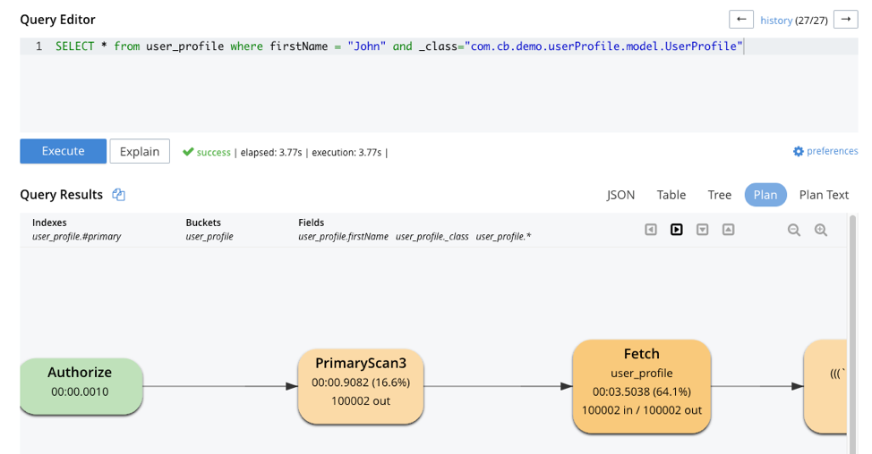
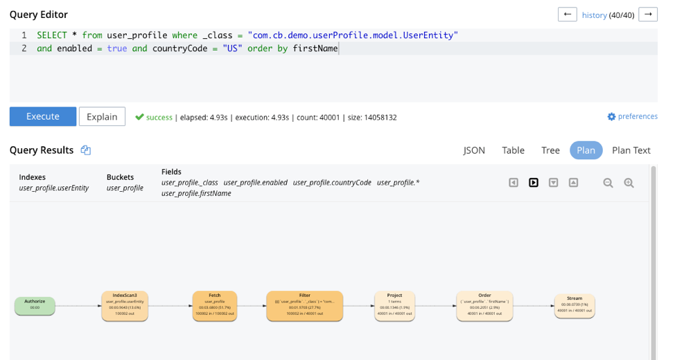
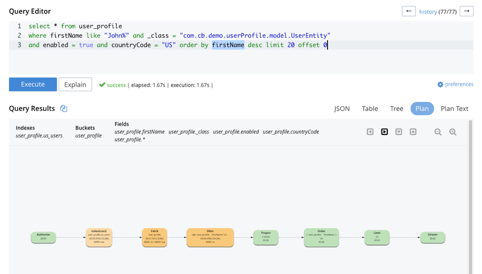
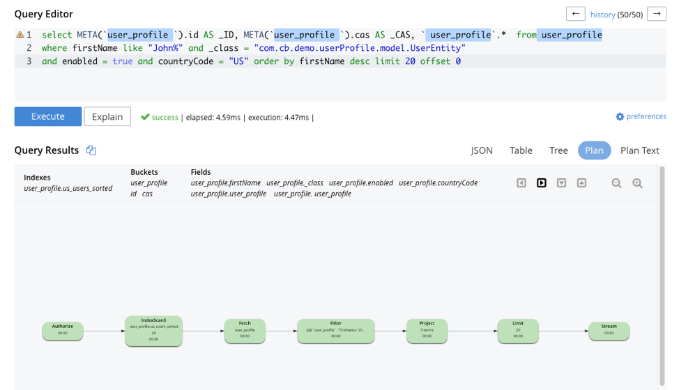
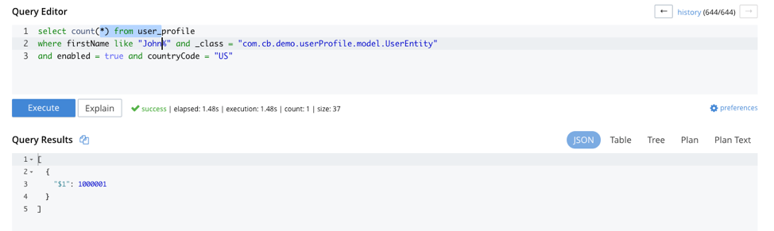
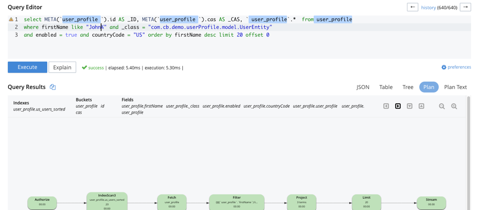
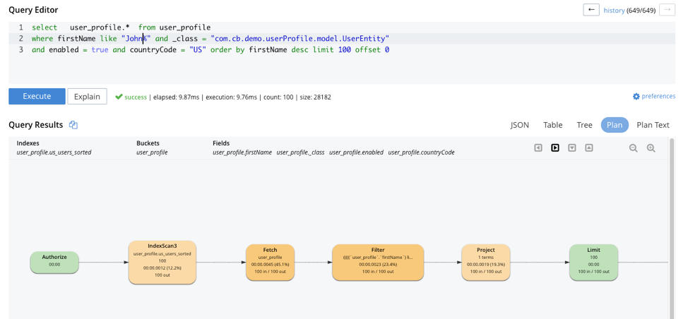
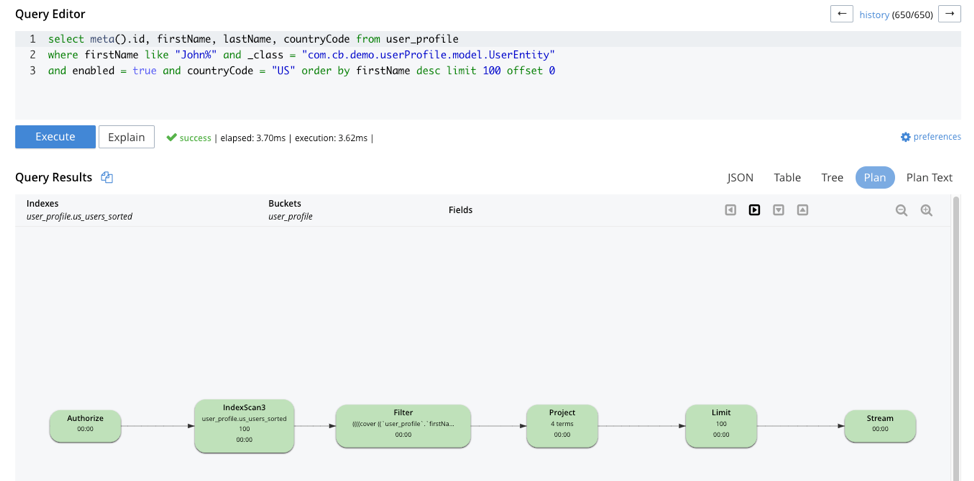
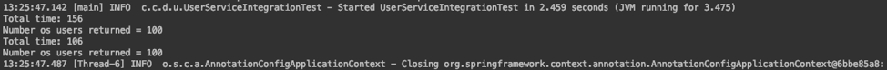

Boosting Spring Data Performance with Couchbase
Spring Data provides an easy programming model for data access in both relational and non-relational databases. It became very popular among Java/JVM developers because of the small learning curve and low codebase.
However, developers quite often run into performance issues while using it, this tutorial aims to explain some of the common problems and how to fix them.
Avoiding Joins with Couchbase
The most common issue with any Object-relational mapping framework (ORM) is the excessive amount of joins needed to bring an object back to memory. The relational model requires you to map relationships between tables and define them as EAGER or LAZY. The problem is that developers quite often map relationships as EAGER and as the system and data grows, the overall performance starts to decrease rapidly.
It generally forces developers to revisit these entities and set most of the relationships as LAZY. However, this small change requires a significant refactor, as you have also to change all the code that handles these new lazy entities.
One of the advantages of using Couchbase with Spring Data is that in a document database we typically store multiple related entities in a single document, therefore most of the time you don’t need to create any JOINs to bring an entity back to memory. This will make your application naturally perform better while compared to any RDBMS.
How to create indexes for Spring Data
The second key thing to have a good performance at scale is to create the right indexes for your data, and although Couchbase with Spring Data behaves very similar to a Relational Database at first glance, it works completely different under the hood. For instance, there is no concept similar to a table, all documents are analogous from the database point-of-view.
Therefore, if you have +100 000 documents in your bucket, and you execute a query like the following:
SELECT * from user_profile where firstName = "John" and _class="com.cb.demo.userProfile.model.UserProfile"It will scan all +100 000 documents looking for those 2 attributes:

The total number of documents scanned during the query:

The obvious question then is how do I optimize queries in order to reduce the number of documents scanned? Well, the short answer is: just create the right indexes for your data. Creating indexes for a Spring Data application is not much different than creating indexes for any other application which uses Couchbase. There are, however, some small details that you should be aware of.
Couchbase’s implementation of Spring Data automatically adds the _class attribute into your document. This property works as the document type. Therefore, a query like the following:
List<UserEntity> findByName(String name);Will be translated in N1QL by something like:
Select * from user_profile where name = ? and _class= “com.cb.demo.userProfile.model.UserEntity”| You can print in the console all N1QL queries generated by Spring Data. (https://blog.couchbase.com/how-to-log-queries-generated-by-spring-data/) |
Note that the expression _class= “com.cb.demo.userProfile.model.UserEntity” was added automatically to the query. As we always have to specify this filter while querying for the UserEntity, we should create at least one index for it:
CREATE INDEX `userEntity` ON `user_profile`(`_class`) WHERE (`_class` = "com.cb.demo.userProfile.model.UserEntity")This is the most basic optimization you can do for a Spring Data app: create at least one index for each document type.
With our new index in place, the databases will scan only documents with _class = "com.cb.demo.userProfile.model.UserEntity" now, which is still better than scanning the whole database.
This basic index can be automatically generated via the @N1qlSecondaryIndexed annotation:
@N1qlSecondaryIndexed(indexName = "userEntity")
public interface UserEntityRepository extends CouchbaseRepository<UserEntity, String> {
}This annotation will generate the following index in the database:
CREATE INDEX `userEntity` ON `myBucket`(`_class`)
WHERE (`_class` = "com.cb.demo.userProfile.model.UserEntity")In most scenarios, this basic index can help to slightly improve the performace of some queries. Although, in our specific scenario, as all documents in the database have the same type (com.cb.demo.userProfile.model.UserEntity) it won’t be effective.
| The @N1qlSecondaryIndexed will create a basic index for the entity if it does not exist yet. However, if the node containing the index fails and you restart your application, the index will be recreated, which might not be the desired behavior. |
| Use @N1qlPrimaryIndexed only in development environments |
The index we just created is a good start, but it is far from optimal, as we are pushing only the _class to the index. As your data grows, we recommend you to remove both the @N1qlSecondaryIndexed annotation and the auto-generated index from the database, they could be replaced by a similar but more effective indexes, we will discuss more about it later in this tutorial.
Let’s say, in our application, we mostly care about active users living in US, and we usually sort them by first name. A Spring Data implementation of this query would look like the following:
List<UserEntity> findByEnabledAndCountryCodeOrderByFirstName(boolean enabled, String countryCode);and the N1QL query generated will look like the following:
SELECT * from user_profile where _class = "com.cb.demo.userProfile.model.UserEntity"
and enabled = true and countryCode = "US" order by firstNameRunning this query against our 100k documents database will generate the following plan:

Analyzing the filter part of our query, we will notice that Couchbase has scanned all 100k documents but only 40001 were selected:

As our application commonly searches for users using these same three filters, we could create an index for it:
create index us_users on user_profile (_class, enabled, countryCode )
where _class = "com.cb.demo.userProfile.model.UserEntity"
and enabled = true and countryCode = "US"
USING GSI;Now, even queries like the following will leverage the us_users index:
Example 1
Spring Data Method:
List<UserEntiry> findByEnabledAndCountryCodeAndFirstNameLikeOrderByFirstName(…)Equivalent Query
select META(`user_profile `).id AS _ID,
META(`user_profile `).cas AS _CAS,
`user_profile`.* from user_profile
where lastName like "Smith%"
and _class = "com.cb.demo.userProfile.model.UserEntity"
and enabled = true
and countryCode = "US"
order by firstName limit 20 offset 0Example 2
Spring Data Method:
List<UserEntiry> findByEnabledAndCountryCodeAndFirstNameLikeOrderByFirstName(…)Equivalent Query
select META(`user_profile `).id AS _ID,
META(`user_profile `).cas AS _CAS,
`user_profile`.* from user_profile
where firstName like "John%" and _class = "com.cb.demo.userProfile.model.UserEntity"
and enabled = true
and countryCode = "US"
order by firstName desc
Here is a closer look at our new Query Plan using the us_users index:

The query we executed took 1.67 seconds to run, which is clearly not good enough. If you look more closely at the image above, you will notice that 51% of the time was spent during fetch operation, as the filters firstName/lastName are not in the us_users index. Let’s add on top of that the fact that we are sorting all results in order to return only the first 20 and then you have a nice recipe for poor performance.
To fix that problem, we will slightly modify our us_users index by pushing firstName and lastName to the index and keep them sorted:
CREATE INDEX `us_users_sorted` ON
`user_profile`(
`_class`,
`enabled`,
`countryCode`,
`firstName` DESC,
`lastName` DESC)
WHERE (((`_class` = "com.cb.demo.userProfile.model.UserEntity")
and (`enabled` = true))
and (`countryCode` = "US"))And then, if we run our query again:

The same query runs now in incredible 4.59 ms, just +360x faster than the previous one. Which is a good result considering that we are running the database locally in a commodity notebook. Let’s run our equivalent Spring Data method just to be sure the time we got is consistent with the code:
Instant start = Instant.now();
List<UserEntity> users = userEntityRepository
.findActiveUsersByFirstName("Some%", true, "US", 20, 0);
Instant finish = Instant.now();
System.out.println("Total time: "+ Duration.between(start, finish).toMillis());
System.out.println("Number os users returned = "+users.size() );And here is the output:

The code took 114ms to run, which means that ~90% of the time was spent in the application side (preparing the query, converting the results to Java objects) and most importantly, network latency.
| At scale, the order of the filters matter, you should put first the attribute which will filter out most documents . |
Performance at Scale
Even though we have +100k users, our index of US users has just 40k documents in it, which might not be fair production scenario yet. Let’s increase the number of US users to 1 million:

If we run our query again, we will get nearly the same execution time:

You can also use indexes to boost your JOINs, Group By and COUNTs. If you need to paginate and navigate through hundreds of results, there are also some tricks to make your OFFSET pagination faster. However, these topics are out of the scope of this tutorial.
Reducing fetches with projections
Let’s rerun our latest query but returning the top 100 results this time:

In the Query Plan above, nearly 45% of the time was spent in a step called fetch which is triggered whenever the query filters or attributes being returned are not present in the index.
One of the issues with any Spring Data implementation is that as it doesn’t know which fields you will need, so all fields are returned by default. In Couchbase’s implementation, we specifically return the following:
SELECT META(`my_bucket`).id AS _ID,
META(`my_bucket `).cas AS _CAS,
`my_bucket `.* FROM ` my_bucket ` where …We could avoid fetches by returning/querying only fields that are in the index:

In the query plan above there is no fetch step, as all filters and returned fields are in an index called us_users_sorted, that is basically the main reason why projections are usually faster than the standard Spring Data syntax. Therefore, if you are trying to improve the performance of a query, this is one of the changes you should consider.
Here is how the code of a simple projection looks like:
public List<SimpleUserVO> listActiveUsers( String firstName, boolean enabled, String countryCode, Integer limit, Integer offset ) {
String query = "Select meta().id as id, firstName, lastname from "
+ bucket.bucketManager().info().name()
+ " where type = '"+UserEntity.TYPE+"'"
+ " and firstName like '"+firstName+"%' "
+ " and enabled = "+enabled+" "
+ " and countryCode = '"+countryCode+"'"
+ " order by firstName desc limit "+limit+ " offset "+offset;
N1qlParams params = N1qlParams.build().consistency(ScanConsistency.REQUEST_PLUS).adhoc(false);
ParameterizedN1qlQuery queryParam = N1qlQuery.parameterized(query, JsonObject.create(), params);
return userRepository.getCouchbaseOperations()
.findByN1QLProjection(queryParam, SimpleUserVO.class)
}Let’s check if the code also runs faster:
Instant start = Instant.now();
//old query
List<UserEntity> users = userEntityRepository
.findActiveUsersByFirstName("Some%", true, "US", 100, 0);
Instant finish = Instant.now();
System.out.println("Total time: "+ Duration.between(start, finish).toMillis());
System.out.println("Number os users returned = "+users.size() );
Instant start2 = Instant.now();
//query with projections
List<SimpleUserVO> simpleUsers = userService
.listActiveUsers("Some%", true, "US", 100, 0);
Instant finish2 = Instant.now();
System.out.println("Total time: "+ Duration.between(start2, finish2).toMillis());
System.out.println("Number os users returned = "+simpleUsers.size() );output

The code using projections is ~50ms faster because all the data needed is already in the index, and there is also less data to be transmitted over the network and parsed to Java objects.
| You don’t need to create indexes for every single query, the Query Planner is smart enough to combine and use multiple indexes even when the query has no exact index match. |
Note that you can return Value Objects (VOs) directly from Spring Data, but the underlying generated query will still be a `SELECT * `:
List<SimpleUserVO> findByName(String name);| If you decide to use projections in your code, spend some time learning about how indexing works in Couchbase, it will give you some valuable tips to extract max performance out of it. |
At this point we could also revisit your repositories to remove some of the @N1qlSecondaryIndexed annotations and drop the respective indexes from the database. The auto-generated index would look like the following:
CREATE INDEX `userEntity` ON `test`(`_class`) WHERE (`_class` = "com.cb.demo.userProfile.model.UserEntity")Those indexes could be replaced by similar but more optmized new indexes with fields which are commonly returned and/or filtered in the queries. This change can considerably speed up queries that doesn’t match a more specific index:
CREATE INDEX `userEntity` ON `test`(`countryCode`, `firstName`, `enabled`, `lastName` )
WHERE (`_class` = "com.cb.demo.userProfile.model.UserEntity")Note that, as we are using projections, there is no need to store the _class attribute in the index, as it won’t be returned anyway. Try to avoid storing unecessary fields in the index, with smaller indexes Couchbase can keep more things in the memory.
TL/DR
In summary, if you are not having a satisfactory performance, we recommend a few basic optimizations:
-
Spend some time learning about how N1Ql indexing works, this book is a good starting point
-
Remove the primary index and create proper indexes for each of your document types
-
Remove the @N1qlSecondaryIndexed and the generated index in the database, you could replace it with a similar but more effective one.
-
Check the generated query and make sure that it is using an index (via Query Planner or EXPLAIN)
-
Check if you can create a more optimized index for your query. Sorting and array search, for instance, are common scenarios where you might need to create a proper index.
-
In scenarios where you need a high read throughput, choose projections over the standard Spring Data syntax to avoid as much fetch as possible.
| Quite often we also see scenarios where developers blame the database but turn out to be a problem with the networking or lack of memory/CPU in the application’s machine. For those cases, we highly recommend you to troubleshoot it first using Response Time Observability (RTO) before trying to optimize anything in the database. |